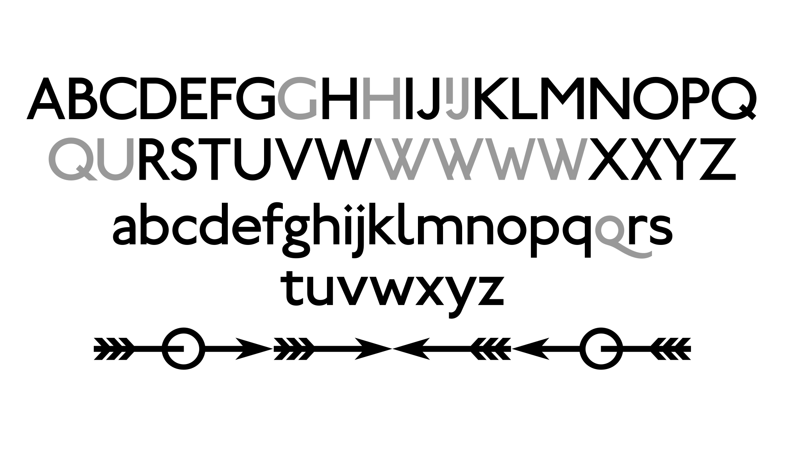

Metropolitan Line is an open-source revival of Edward Johnston’s timeless typeface for the London Underground of 1916. Designed by Alexei Vanyashin and Michael Voronin in 2026, it is based on Railway Sans, digitized by Justin Howes in 1994 and published by Greg Fleming in 2012. The typeface has been thoroughly revised, with refined contours, improved spacing, rhythm, and kerning, resulting in a cleaner, more consistent interpretation of the original design.
To contribute, see github.com/cyrealtype/metropolitan-line.
Railway Sans is a digital revival of Edward Johnston’s original 1916 Railway type, based directly on Johnston’s surviving artwork, proofs, and research undertaken by typographer Justin Howes. After Howes’ passing, the project was published in 2012 by Greg Fleming, making this open-source interpretation of Johnston’s original design publicly available.
